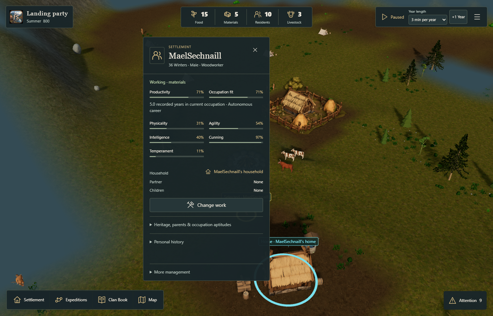
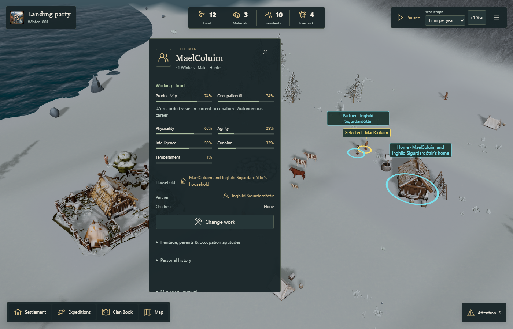
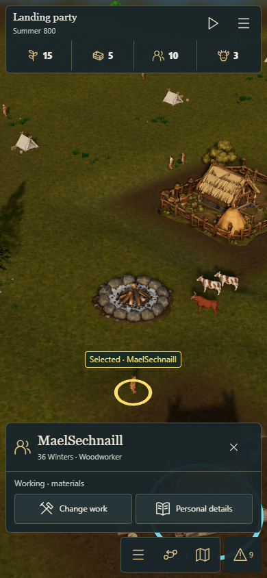

Selected resident · summer · Standard


Real Farmyard floor queries and unchanged card DOM are reused. Current facts, editable controls, events, assets, quality and simulation cadence stay on their established paths.
Measurements, limits and reproduction · Paired CPU/Core results · Real-asset floor probes · Actual card controls
Selected CPU work is lower; this is not an FPS or physical iOS performance claim. The full report retains all frame distributions, including unfavorable samples. Both PRs remain subject to owner review.





Open FjordSide. Physical iPhone/iPad review remains pending: selection, edits, house actions, map/missions and background return should feel unchanged.